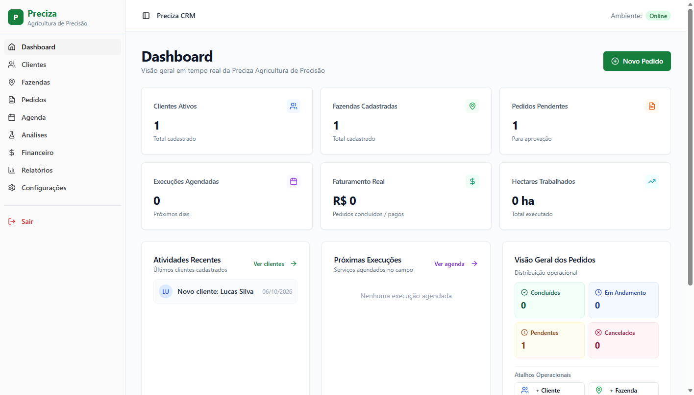
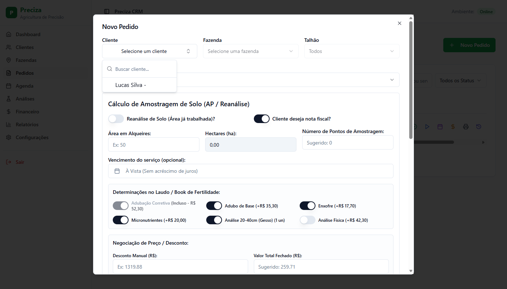
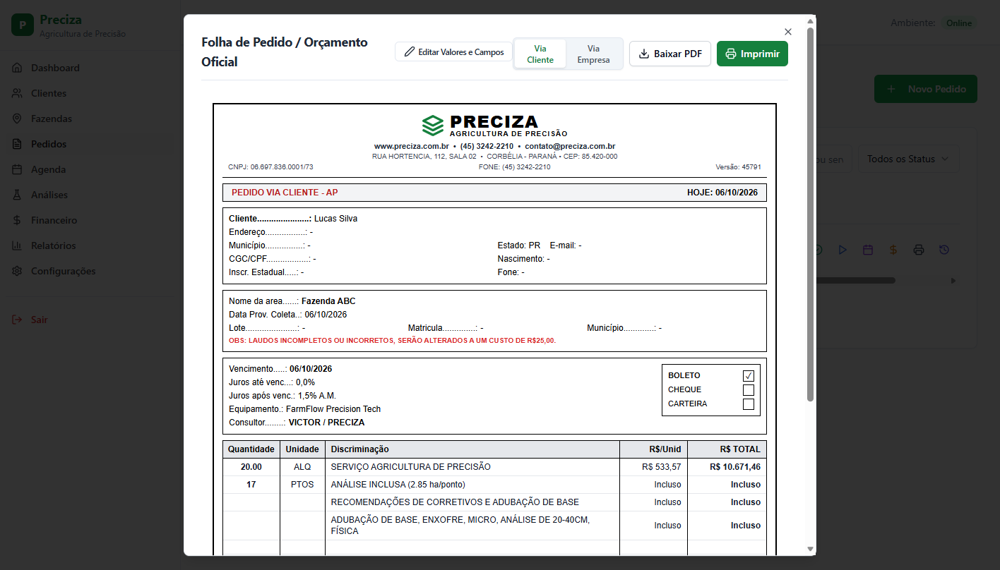
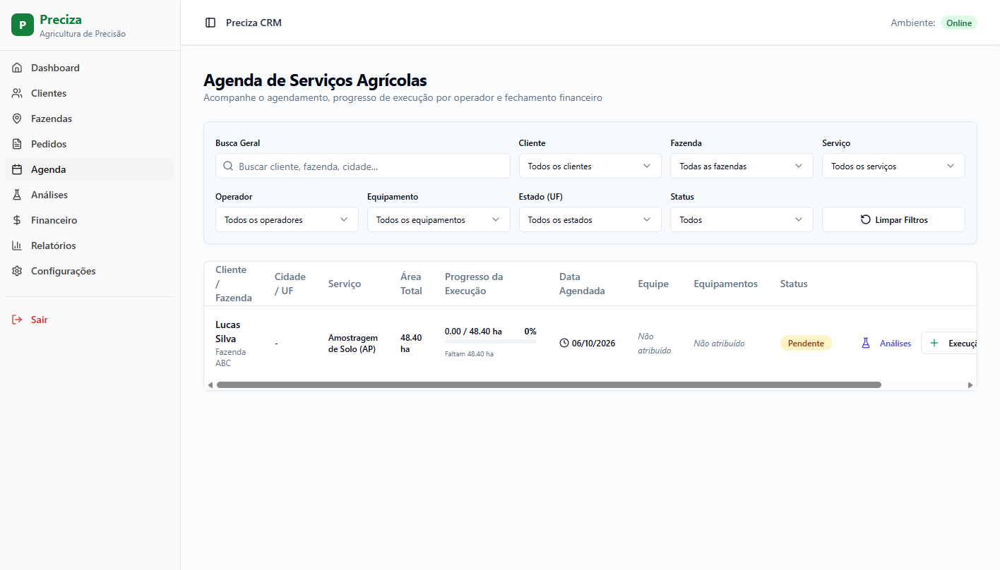
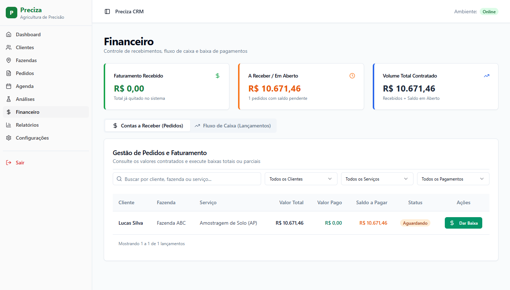

Uma plataforma completa desenvolvida sob medida para centralizar clientes, pedidos, cálculos agronômicos de alta precisão, agenda operacional de campo e liquidação financeira.

A Preciza já possui uma metodologia técnica consolidada e cálculos de alta confiança. O FarmFlow chega para transformar oportunidades de melhoria em mais agilidade, integração e escala no dia a dia:
Levar toda a inteligência da planilha oficial para um fluxo digital guiado, ganhando velocidade na criação de propostas, conversão automática (alq/ha) e histórico unificado por cliente.
Ampliar a visibilidade em tempo real entre a operação de campo e o administrativo, acompanhando o andamento dos talhões, alocação de equipamentos e lotes de amostras em um único painel.
Conectar o controle de serviços executados diretamente ao faturamento e às baixas de recebimento, trazendo visão clara do saldo por cliente e registro completo de aprovações.
O ecossistema FarmFlow cobre toda a jornada de atendimento ao produtor rural.
Clientes, fazendas e talhões com medida dupla automática: Alqueires (alq) e Hectares (ha) (1 alq = 2,42 ha).
Cálculos exatos baseados na planilha oficial da Preciza: Amostragem de Solo (AP), Pulverização por Drone, Mapeamento, Conferência e Foliar.
Alocação de colaboradores, equipamentos, maquinários, registro de área executada e controle de amostras laboratoriais.
Baixa com pagamento à vista ou a prazo com juros contratuais, exportação de Folha de Pedido em PDF oficial e trilha completa de auditoria.
O coração do FarmFlow implementa rigorosamente a matemática de engenharia agronômica que a Preciza utiliza:

O vendedor ou agrônomo gera na hora o documento oficial de proposta para enviar ao cliente pelo WhatsApp ou imprimir:


Vincule operadores, quadriciclos, drones e veículos a cada serviço com registro de datas previstas e executadas.
Inclusão em lote com sugestão automática calculada: Completa, Macro, Micronutrientes, 20-40cm e Análise Física.
Se choveu ou o talhão foi feito parcialmente, o sistema registra exatamente a área executada e o saldo pendente.
Mais agilidade no fechamento e conciliação automática do caixa:

Controle exatamente quem pode ver, editar, aprovar descontos ou confirmar recebimentos, sustentado por uma estrutura moderna e leve.
Perfis definidos para Administrador, Gerente, Operador e Financeiro — cada usuário acessa apenas o que faz parte da sua função.
Todo pedido registra quem criou, quando alterou, quem concedeu desconto, quando foi agendado e quem confirmou o pagamento com data e hora.
Acesso protegido por senha e criptografia de internet (cadeado HTTPS), com cópias de segurança diárias para garantir que nenhuma informação se perca.
Para operar o FarmFlow 100% online com endereço próprio, cadeado de segurança e backups automáticos, existem três faixas de estrutura conforme o porte da equipe (valores pagos diretamente aos provedores):
A plataforma já conta com os 8 serviços oficiais configurados, todas as variáveis de custo e parâmetros da tabela cadastrados e fluxos validados para o dia a dia.
Apresentação prática das telas com o Manual Ilustrado em PDF entregue.
Cadastro das principais fazendas e talhões da safra atual.
Adoção gradual dos orçamentos e pedidos integrados dentro do FarmFlow.
Consultores e agrônomos poderão montar pedidos e orçamentos direto na fazenda mesmo sem sinal de internet. Assim que o celular ou tablet voltar a conectar, o sistema sincroniza tudo automaticamente com o escritório — sem retrabalho e sem perda de dados.